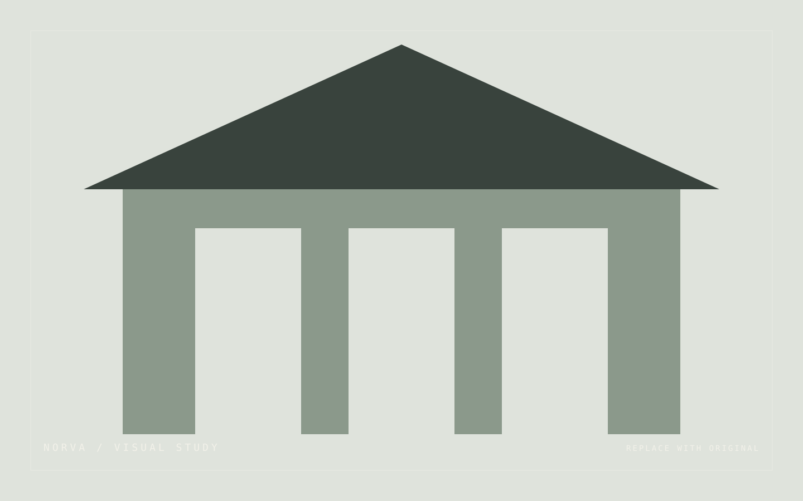

01 / 摄影 · PHOTOGRAPHY
摄影作品
以镜头观察世界，也记录时间留下的细节。
这里将逐步整理个人摄影档案，涵盖旅行、自然与地理景观、人物、建筑及日常生活。作品以纪实观察为基础，保留不同地方与时刻的真实质感。




以上图片为页面布局测试用临时视觉图，并非原创摄影作品或客户案例。后续可将原创照片替换到相同资源位置，保留当前页面结构。
01 / 摄影 · PHOTOGRAPHY
以镜头观察世界，也记录时间留下的细节。
这里将逐步整理个人摄影档案，涵盖旅行、自然与地理景观、人物、建筑及日常生活。作品以纪实观察为基础，保留不同地方与时刻的真实质感。

以上图片为页面布局测试用临时视觉图，并非原创摄影作品或客户案例。后续可将原创照片替换到相同资源位置，保留当前页面结构。